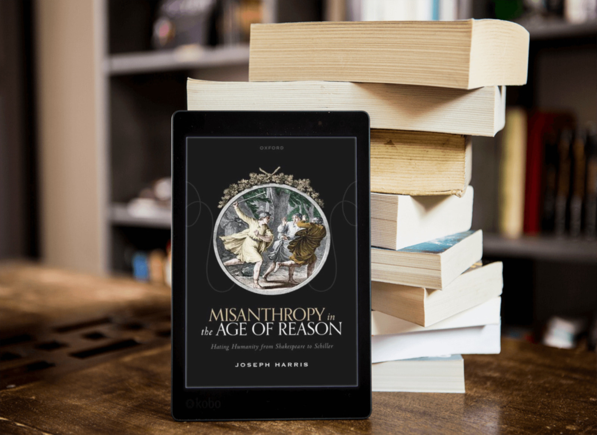
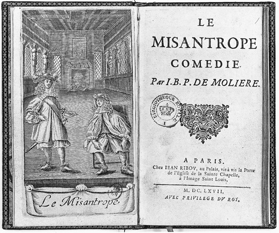
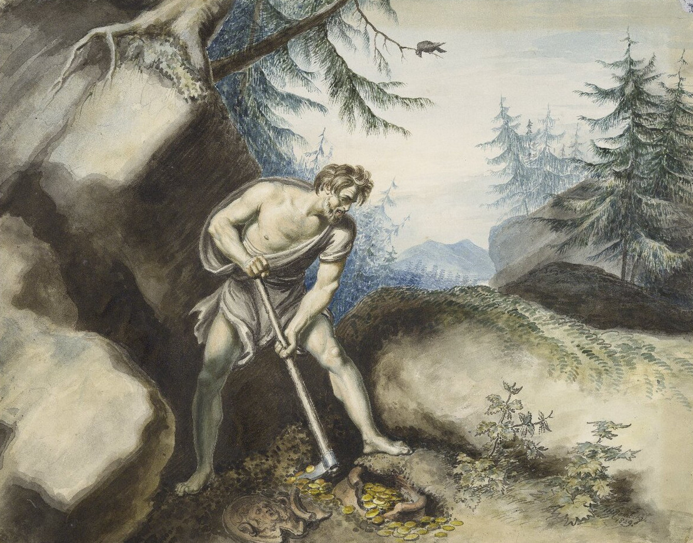

Misanthropes – Literary and Philosophical
Book review: Misanthropy in the Age of Reason
If you like reading about philosophy, here's a free, weekly newsletter with articles just like this one: Send it to me!
Misanthropy in the Age of Reason is an important book for philosophers interested in the moral nature and condition of humankind.

The term misanthrope is associated with hatefulness towards human beings and dispositions to hostile or even violent behaviours. Attic Greece provided both the term and some of the most enduring exempla, notably Timon of Athens. The term later passed into Western tradition thanks to playwrights enticed by its critical, dramatic power. Aristophanes, Lucian of Samosata and Shakespeare showcased Timon as did many later writers. Philosophers have at times been part of discourses about the nature of misanthropy.

Socrates offers the first recorded discussion of the origins of misanthropic sentiment in the Phaedo. Cicero was vocal about misanthropy and Plato and others offered their own reflections. Misanthropy persisted in early Christian reflections, connected to ideals of agape and philanthropy and later to darker postlapsarian accounts of our ‘fallenness’. The usual misanthropic behaviours remained hostility towards others and reclusion and withdrawal from the social world. Kant – in his lectures on ethics, religion, and anthropology – describes two kinds of misanthrope: hostile ‘Enemies of Mankind’ and self-withdrawing ‘Fugitives from Mankind’. Each recapitulates an image of misanthropy dating back to Aristophanes.
The classical pedigree of misanthropy as a topic, concept and stance on humankind makes it puzzling that – until very recently – there was little interest in it from philosophers. I suspect most felt that ‘hatred of humankind’ was too extreme to warrant sustained analysis. In the last six years, this changed thanks to David E. Cooper’s book Animals and Misanthropy. It characterised misanthropy as a negative and critical verdict on the collective moral condition of humanity as it has come to be. This verdict could be expressed in hatred, but need not be. Subsequent misanthropologists endorsed this account, although others defended the ‘hatred’ view. The contemporary philosophical work on misanthropy would profit by engaging more with those historical discourses. This is now easier thanks a new book by Joseph Harris – a historian at Royal Holloway University of London – who offers an excellent account of a crucial part of that history.

Source: leschroniquesculturelles.com
Misanthropy in the Age of Reason opens with the pluralist conviction that ‘misanthropy does not have one single, fixed meaning, archetype, or moral value across the early modern period’ (2). The conceptual and dramatic possibilities of misanthropy are shown in writers from Molière and Shakespeare to Schiller and other less-well-known figures, such as Percival Stockdale. Harris shows that the ‘unsettling figure’ of the misanthrope was put into service as a locus for reflection on important philosophical issues – ‘vice and virtue, reason and folly, authenticity and inauthenticity, and individual and society’ (3). What writers offered, philosophers inherited. When Kant, Schopenhauer, Rousseau, Kierkegaard and others discussed misanthropy, they were partly developing ideas and archetypes provided by writers.
Harris suggests academic work on misanthropy has two groups: conceptual analysts of misanthropy (David Cooper, Andrew Gibson, and Judith Shklar) and work by literary historians on the misanthrope as a topos (more visible in European scholarship by Friedrieke Wursthorn or Bernhard Sorg). Harris puts himself in the second camp of literary and historical scholar of misanthropic figures. Both have their roles to play. For instance, writers can help us explore the emotional profiles of a misanthrope: German writers distinguish Menschenfeind (human-despisers) and Menschenhasser (human-haters) and others add contempt, distrust, and fear. Other writers ask useful questions: an Anglican preacher asked if one could really experience ‘so general a defiance with all Mankind, that he hates everybody’.
There is also literary discussion of core conceptual questions, like whether misanthropy must involve specific hatred of individuals. Harris suggests that Enlightenment misanthropy tends to be ‘curiously decoupled’ from the hatred of actual individuals (9). But being a true misanthrope need not entail hatred of individuals. A critical verdict of humankind need not devolve into judgments on individual humans. As Alexander Pope recognised, misanthropes can revile humankind but admire specific individuals, such as those unusually free of the failings that characterise the mass. Harris notes misanthropy could be entangled with specific forms of hatred and discrimination – sexism, racism, etc. (9). Thomas Abbt, a German scholar, said hatred of Turks could mutate into generalised hatred of everyone (9). This is confirmed by philosophical work which confirms that hatred has a self-expanding character. However, whether this happens will depend on a wide range of contingent conditions. We must attend here to the aetiology of misanthropy – its causes, sources, and the conditions that enable or deter its development.
Misanthropy makes presuppositions about moral psychology and processes of moral development. It is clear that misanthropy has many sources, many of them morally admirable. For Daniel Cottom, author of Unhuman Culture, misanthropy often begins in kinds of virtue – generosity for Timon, reason for Lemuel Gulliver – which is then abused by others (10). This claim first appeared in Phaedo. Socrates speculated that misanthropy begins when one places too much moral trust in people. If this trust is broken the result is intense and irreversible moral distrust. Once bitten, twice shy. But this treats misanthropy as an error reflecting the failings of the misanthrope. Harris documents a long history of pathologisation of misanthropy – in terms of mental disorders, acute ‘sensibility’ or psycho-physiological defects (194, 204, 238).
Harris comes close to the modern philosophical sense of misanthropy as a critical appraisal when he notes that misanthropes, historical and fictional, share a predilection for ‘long, evocative lists of failings’ (10). Buddhist and Calvinist catalogues are the most comprehensive. Harris could have noted the cultural influence of Christian lists of vices and ‘deadly sins’ (a fantastic study is Rebecca DeYoung’s Glittering Vices). But misanthropes need not use the languages of sin and always recognise more than seven failings or vices.

A rhetoric of slowness and speed has been used by philosophers since the ancient periods to characterise and assess different ways of life.
Two philosophical points could be added to his discussion. First, human failings are orderable into clusters (Cooper’s term) which are either useful taxonomic devices or – for Christians – expressions of the objective ordering of human failings. Second, which failings are intelligible and salient depends on background historical and social conditions. Cruelty and pride recur, while others, such as concupiscence and hubris, became obscure. Misanthropologists can recruit historians of philosophy to help explore these conditions.
The history of literary misanthropy also shows us more about the social identities of misanthropes. An array of women misanthropes did appear, slowly, in works such as Shadwell’s The Sullen Lovers (1668), but most start to appear in the 19th century.
Becky Sharp is the ‘young misanthropist’ in Thackeray’s Vanity Fair (1847-48); the titular character of Stendhal’s 1842 novel Lamiel is a ‘petite misanthrope’. I’m less persuaded by Harris' judgment that misanthropy ‘in the early modern period and indeed more generally is at heart a pathology of the privileged’ (14). First, our evidence is biased by the predominance of male authors. For all we know, there may have been many women misanthropes whose views were never recorded and broadcast. Second, there are kinds of misanthropy – ‘quietist’ in spirit – which by their nature tend not to openly announce. Finally, why suppose that critical moral verdicts on our collective moral condition are confined to the privileged? In a sense, one might be inclined to expect those who suffer the barbarity and selfishness of the world to be more inclined to kinds of misanthropy.
Misanthropes who do elect to communicate their verdicts need potent language and imagery. Harris notes the use of animal metaphors: the most famous being Plautus’s adage that ‘man is a wolf to man’ – homo homini lupus (later suggested by Isaiah Berlin as the motto for Wolfson College). Reflection on the abuse of animals is a standard entry point into kinds of misanthropy these days. But what tended to inspire misanthropes has been what Robert Burns called ‘man’s inhumanity to man’.
Harris is right to note misanthropic condemnation of humanity is still consistent with compassion for suffering humans. A good example is Schopenhauer – an unpleasant man but one who still endorsed the compassion modelled in the Indian religions he admired. Harris, though, is also right to remind us of the changing meanings of these moral terms. Compassion in the 17th century did not entail empathy, but rather keeping the suffering of others at arm’s length (19). Misanthropic verdicts of course change – as the world changes and as moral sensibilities change. Indeed, misanthropes often disagree. Secularisation can be seen as a triumph of rationality over dogma and oppressive superstitions or awful descent into a corrupt ungodliness. All this complicates how we think about the justification, content, and expression of misanthropic verdicts.
Philosophers will be less persuaded by some of Harris’s claims about allegedly paradoxical aspects of misanthropy. The claim that misanthropes must ‘share the very flaws they condemn in others’ is too quick (20). Some misanthropes work hard to cleanse their failings and what Kant called Fugitive-style withdrawal is often embraced for that reason. In another case, Friedrich Hibber implied misanthropes must either condemn themselves or exclude themselves from the world (20). But this is a false dilemma. A misanthrope may try to reform the world through moral or religious or political activism. Other misanthropes seek ways of accommodating to the corruptions of the world. This indicates the limitations of remaining within the two options – the hateful violent Enemy or the reclusive Fugitive. There are other misanthropic stances – the Activist who aspires to rectify the world or Quietists who seek ways of accommodating to the failings of the world.
Harris’s literary explorations do indicate options missed by philosophers, however, including the idea of non-human misanthropes. Heinrich Heine’s 1841 comic spoof Atta Troll features a misanthropic bear. The Creature in Mary Shelley’s Frankenstein was a misanthrope, for good reason. Jonathan Swift’s Houyhnhnms are moral superiors to humankind and judge us to be terrible (108ff). Historians of science fiction would also supply examples of aliens passing grim moral verdicts on humanity. Literature reveals these possibilities and therefore helps us explore the psychology of misanthropy.
Harris, for instance, has distinguished ‘self-inclusive’ misanthropes from the ‘self-aggrandising’ kinds who see themselves as the exceptions to the rule (21). This recalls an objection, by Judith Shklar and Lisa Gerber, that misanthropy is a vice (or, closely related, a fuel for vices). I agree some misanthropes are arrogant, condescending and vainglorious. But others are not – misanthropes can be compassionate or morally ambivalent. Molière’s 1666 play La misanthrope explores this tension with the contrasts between Alceste (discontented, railing) and Philinte (genial, quiescent). Harris’s discussion of Alceste and his ‘afterlives’ skilfully charts these different attitudes toward misanthropy (144f).
The question of how one lives as a misanthrope is neglected in the misanthropological scholarship. Kathryn Norlock has emphasised the moral and the existential tensions of reconciling misanthropy with hope and political ideals. Others explore existential and emotional tensions, such as the relation of one’s misanthropic outlook to themes of alienation, moral grief, and loneliness. For Harris, misanthropes can be ‘fixated on the outside world’ and incapable of introspection and self-criticism (22). Some feel very certain in their judgments while others are haunted by the ‘uneasy suspicion’ that people may not be as bad as they fear (23). In my experience few occupy the uncertain position. Eco-misanthropes are utterly persuaded of greed and wastefulness of our forms of life. The evidence is too much and too bad. Issues like this are part of the epistemology of misanthropy (verdicts need evidence and argument, after all).

Timon of Athens, by Johann Heinrich Ramberg (details: Wikimedia)
The truth of misanthropy is related to interesting trends in the history of literary misanthropy. Harris notes two broad phases in that history. The first – to the 18th century – goes from relatively few mentions of the term to its becoming part of common discourse. The focus was initially satires with well-known fictional misanthropes, such as Timon, which vindicate their verdicts. Later on the misanthropes are real-life, like Rousseau and Swift, with a new purpose. For Harris, one starts to see ‘a … sustained attempt to redeem, revalorize, or rehabilitate the misanthrope’ as a kind of ‘a broadly positive figure’ (24). Misanthropy did become an over theme for philosophers in the 18th century onwards. Kant, tellingly, refers to ‘Robinsonades’ – the Robinson Crusoe-style stories of pious lives far from the corruptions of civilization. Unfortunately, Enlightenment discourses – suffused with a sense of moral optimism and ideals of progress – are hostile to misanthropy. By the late 1700s, notes Harris, the onus is on a misanthrope to ‘adapt to society’, not on the society ‘to acknowledge the misanthrope’s criticisms’ (24).
Harris could elaborate on the wider philosophical context of this defanging of misanthropic critique. It makes sense that the Enlightenment’s moral optimism, celebrated in the writings of the philosophes, would deter darker visions of humankind. However there’s lots to explain. For instance, it has become standard to deflate critiques of humankind by confining them to specific awful individuals or unfortunate social or economic conditions. Our failings (it is argued) only really appear in pathologically bad people or under unusually bad social conditions (war, inequality). If so, the critique is of specific persons and conditions, not humankind. It would be interesting to study how misanthropy relates to the European Enlightenment. Rousseau is a key figure – his role in the history of misanthropy is, as Harris says, ‘as fundamental as it is multifaceted and complex’ (25). However there is a much wider range of characters and developments: the argument that civilization is corrupting, debates about human nature, the influence of the doctrine of the Fall and the possibility that natural science might be an engine of moral and social progress (119ff). It would take a whole book to chart the Enlightenment conceptions and critiques of misanthropy. Kant will feature, too, whose discussions of misanthropy are tellingly made in the context of his theological and anthropological researches. Harris also offers a wide range of other misanthropes, ones not always on the radar of philosophers, like the Italian poet, Giacomo Leopardi, who argued we are ‘innate misanthropes’ (137ff).

Buddhism is widely admired in the West for its commitments to progressive social activism. But is this really in the spirit of true Buddhism?
Contemporary advocates of misanthropy are also likely to appreciate Harris' accounts of certain kinds of virtuous misanthropes. ‘Sincerity and frankness’, for instance, mark out misanthropes who exemplify ‘commitment to the truth’ (183). Harris rightly sees this as a legacy of classical Cynicism with its ideal of parrhesia – a resolute commitment to telling hard truths, later revived by Foucault (89-90ff). There are also intimations of gentler ‘modes’ of misanthropy, ones marked less by ‘rigorous moral censure’ than a ‘tolerant, enlightened stance’ (188). There is also an interesting exploration of ‘conversion narratives’ of how people become misanthropic (204ff). This is an understudied topic in the philosophical literature but a crucial practical-existential issue. There is also inspiration for a range of other sorts of philosophical issues – the social conditions for virtue, conceptions of the self, the nature of moral formation, and much else (73, 90, 110). Specialist scholars – of Rousseau, Hobbes and others – will find useful insights and we should hope for future studies of their own remarks on misanthropy.
Misanthropy in the Age of Reason is an important book for philosophers interested in the moral nature and condition of humankind. It details a tradition of sustained if not always systematic reflection on our moral performance. It reveals the many possibilities for theorising and enacting misanthropy, though one should also appreciate others – activist and quietist – not noted by Harris, as well as other philosophical variants, such as antinatalism. There is also material for exploring the relations between misanthropy and pessimism. The chapters survey literary and historic misanthropes in ways that can inform philosophical analysis of the concept of misanthropy. There is also an important historical observation: from the 1660s to the early 19th century, the character of Alceste undergoes a ‘de-misanthropisation’ which, for Harris, indicates a broader tendency: ‘a slacker, less discriminate’ use of the term which led ‘the category of misanthropy itself … to degenerate, dissolve, or collapse’ (236).
Obviously, the category was later partially restored, but the recent historical career of the concept and its literary exemplars is instructive, especially for those who want to press it back into service. Anyone who reads the book should come away with a clear sense of the interest and importance of that project.

Joseph Harris (2022). Misanthropy in the Age of Reason: Hating Humanity from Shakespeare to Schiller. Oxford University Press. 304 pages.
Misanthropy in the Age of Reason is an important book for philosophers interested in the moral nature and condition of humankind.
Amazon affiliate link. If you buy through this link, Daily Philosophy will get a small commission at no cost to you. Thanks!
◊ ◊ ◊

Ian James Kidd on Daily Philosophy:


{kind=link}